More on Numerics using Numpy/Scipy
- Derivative, Integration
- Root finding
- Random Walk
Project
-
Calculating value of $\pi$
-
Curve fitting [Next class]
1. Derivative
$$f(x) = x^2 + 5x -4 $$ $$\frac{df(x)}{dx} = 2x+5$$ $$\frac{df(x)}{dx} \Big \vert_{x=1} = 7$$
import numpy as np
import pylab as plt
from scipy.misc import derivative
def f(x):
return x**2 + 5*x -4
df= derivative(f, x0=1.)
print (df)
7.0
# SOLUTION HW1
from scipy.misc import derivative
def f(x, a):
return np.exp(-a*x**2)
a=1.; x0=1
df= derivative(f, x0=x0, dx=1e-3, args=(a,))
print (df)
print (-2*a*x0*f(x0, a))
-0.7357586370898284
-0.7357588823428847
HW1
Calculate derivative $(d/dx)$ of a function : $f(x) = e^{-ax^2}$ at $x = 1 $ analytically. And Confirm your results with numerical implementation for any arbitrary value of $a$.
- Hint: use arguement $args=(a,)$ in the derivative call and give $a$ as second input arguement in the function.
- Hint: If your numerical answer doesn't match, use another arguement in the derivative call $dx=1e-3$ or some small number.
2. Integration
1. Integrate a Function
$$I = \int_0^1 (x^2+ 3x-1) \ dx$$ $$I= \frac{x^3}{3}+\frac{3x^2}{2}-1x \ \ \Big \vert_0^1$$ $$ I = \frac{1}{3}+\frac{3}{2}-1 $$ $$ I = 0.833$$
from scipy.integrate import quad
def func(x):
return x**2 + 3*x -1
I, err = quad(func, 0, 1)
print (I, err)
0.8333333333333334 1.2723808807253818e-14
# SOLUTION HW2
from scipy.integrate import quad
def func(x, a):
return x**2 * np.exp(-a*x**2)
a=6;
I, err = quad(func, 0, np.inf, args=(a,))
# Analytic Answer
I_ana = np.sqrt(np.pi)/(4.*a**(1.5))
print ('Analytic Answer:', I_ana, 'Numerical Answer:', I)
Analytic Answer: 0.03015005227326115 Numerical Answer: 0.030150052273261157
HW2
Evaluate the following integration:
$$I = \int_0^{\infty} x^2 e^{-ax^2} \ dx$$
using both numerical and analytical methods. For any arbitrary value of $a$. Make sure they match with each other.
- Hint: use arguement $args=(a,)$ in the quad call and give $a$ as second input arguement in the function.
- Hint: Use Feynman's Derivative inside integral technique for the analytical evaluation.
2. Integrate a data set
- Trapezoidal Rule: https://en.wikipedia.org/wiki/Trapezoidal_rule
- Simpson Rule: https://en.wikipedia.org/wiki/Simpson%27s_rule
# load the dataset
data = np.loadtxt('data.dat').T
#print (data)
#print (data.shape)
#print (data[0])
x = data[0]
y = data[1]
plt.plot(x, y, '-o')
[<matplotlib.lines.Line2D at 0x11d3e96d0>]
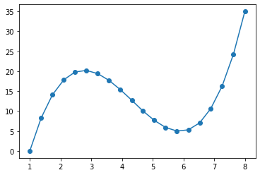
from scipy.integrate import trapz, simps, romb
Int = trapz(y, x)
print (Int)
Int = simps(y, x)
print (Int)
94.0112
93.93663963963965
def func(x, a,b):
return a*x**3 + b*np.sin(x)
HW3
Implement an algebraic function $y$ of some input value $x$ print the output $y$ for different values of $x$. Save the data as some file. Load the file and do numerical integration using trapz as well as simps methods. Also calculate the integration of the function you used earlier analytically and compare your results.
3. Root Finding
The root of a function is a point where f(x) = 0. We use scipy.optimize.root()
from scipy import optimize
import seaborn as sns
sns.set()
def f(x):
return 0.1*x**2 +1.*np.sin(x) - 2.
xx= np.linspace(-10, 10, 50)
yy = f(xx)
plt.plot(xx, yy)
#plt.grid()
roots = optimize.root(f, x0=[-5,5.]) ## x0: initial guess
print (roots.x)
plt.axvline(x=roots.x[0], color='k')
plt.axvline(x=roots.x[1], color='k')
[-3.76415182 5.31434703]
<matplotlib.lines.Line2D at 0x11fb95850>
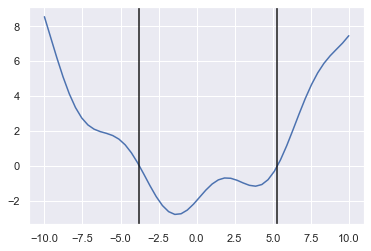
import matplotlib.pyplot as plt
from scipy import optimize
def f(x):
return (x**3 - 2*x**2 +4*x-4.)
(a, b)= [-1.5, 4]
xx = np.linspace(a, b, 20)
plt.plot(xx, f(xx))
root = optimize.brentq(f, a, b)
plt.plot([root], [0.], 'o', color='maroon', lw=4.)
print (root)
1.2955977425220846
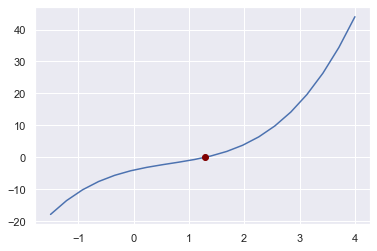
4. Finding Minimum of a function
$$f(x) = x^2+10 \ sin(x)$$ $$ \frac{df(x)}{dx} = 2x+ 10 \ cos(x) $$ Minimum occurs at $\frac{df(x)}{dx} \big \vert_{x=x0} = 0$
def func(x):
return 0.1*x**2 +1.*np.sin(x) + 1.
xx= np.linspace(-10, 10, 50)
yy = func(xx)
plt.plot(xx, yy)
from scipy import optimize
xmin = optimize.minimize(func, x0=0)
print (xmin)
plt.axvline(x=xmin.x, color='k')
fun: 0.20541766243848236
hess_inv: array([[0.85898602]])
jac: array([-1.56462193e-07])
message: 'Optimization terminated successfully.'
nfev: 18
nit: 5
njev: 6
status: 0
success: True
x: array([-1.30644014])
<matplotlib.lines.Line2D at 0x11fcb1160>
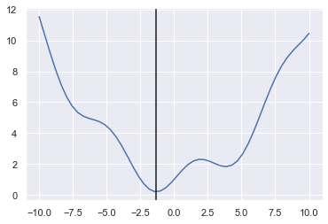
from scipy.interpolate import UnivariateSpline
data=np.loadtxt('data.dat').transpose()
(x, y) = data
plt.scatter(x, y, color='blue')
func = UnivariateSpline(x, y, s=0)
print (func)
#plt.scatter(10, func(10))
xx = np.linspace(0, 9, 50)
yy = func(xx)
plt.plot(xx, yy, color='red')
<scipy.interpolate.fitpack2.InterpolatedUnivariateSpline object at 0x11fd4d9d0>
[<matplotlib.lines.Line2D at 0x11fd8c6d0>]
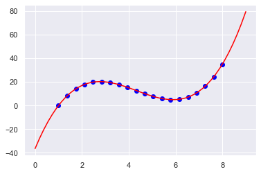
y_new = y + 10*np.random.rand(len(y))
plt.plot(x, y_new, 'o', lw=5.)
func = UnivariateSpline(x, y_new, s=0)
xx = np.linspace(min(x), max(x), 50)
yy = func(xx)
plt.plot(xx, yy, color='red')
[<matplotlib.lines.Line2D at 0x11fe4cdf0>]
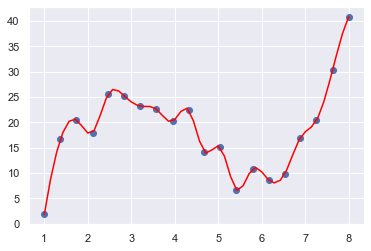
5. Random Numbers
1. Random Walk in 1D
counter = [0]
steps=10000
for i in range(steps):
r = 2*np.random.rand()-1.
next_num = counter[-1]+r
counter.append(next_num)
plt.plot(counter, 'o', markersize=0.4, color='maroon')
[<matplotlib.lines.Line2D at 0x11fee73d0>]
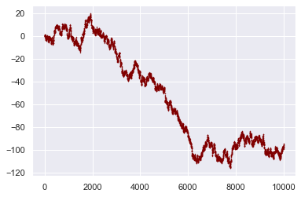
HW4
Perform the same 1D random walk using an array with zero values and populating the array at each random walk steps.
2. Random Walk in 2D
# Random Walk in 2D
steps = 100
counter = [ [0,0] ]
for i in range(steps):
rx = 2*np.random.rand()-1
ry = 2*np.random.rand()-1
last_point = counter[-1]
new_point = np.array(last_point) + np.array([rx, ry])
counter.append(new_point)
counter = np.array(counter)
plt.plot(counter[:,0], counter[:,1], '-o', lw=0.5, color='maroon')
plt.scatter([0],[0], marker='o', lw=10, color='blue')
plt.scatter(counter[-1][0],counter[-1][1], marker='*', lw=10, color='green')
plt.show()
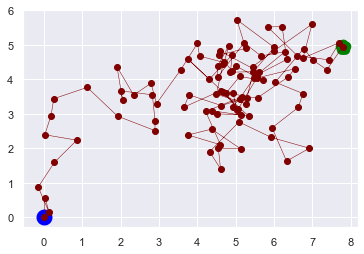
HW5
-
- Perform the Similar 2D random walk with the counter being initialized as a zero Matrix (HINT: use np.zeros()) and the random number for each step in the range [-2, 2]. HINT: Change the scale of the random number which originally is in the range [0,1) to your range.
-
- Compute the average values of x coordinates as well as the y coordinates of all the points visited. HINT: use np.mean()
-
- Calculate the distance between first point and the last point visited. # HINT: Use standard mathematical formula
-
- Calculate the longest and the shortest distances of all the points (except the origin) from starting point., HINT: use np.max() and np.min()
6. Calculating value of $\pi$ using random numbers
- Imagine a circle of radius r inscribed in a square of length 2*r.
- Through random number on the square. Check if it hits the circle or not. Count the points hitting the circle.
- For large N (number of dots) the total number of dots represent the area of the square. and the total dots inside the circle represents the are of the circle.
- Take ratio of area of the two.
$$\frac{A_{circle}}{A_{Square}} = \frac{ \pi r^2} { (2r)^2} = \pi/4$$
$$\pi = 4 \frac{A_{circle}}{A_{Square}}$$
$$\pi = 4 \frac{N_{circle}}{N_{Square}}$$

# np.random.rand() gives values [0, 1)
Maxiter = 100
N_circle = 0
N_square = 0
plt.figure(figsize=(6,6))
for i in range(Maxiter):
rx = 2*np.random.rand()-1
ry = 2*np.random.rand()-1
l = np.sqrt(rx**2+ry**2)
plt.scatter(rx, ry, color='blue', lw='.5')
if l<= 1.:
N_circle = N_circle +1
plt.scatter(rx, ry, color='red', lw='.5')
N_square +=1
plt.xlim([-1.2,1.2])
plt.ylim([-1.2,1.2])
plt.axhline(y=0., color='maroon', lw=2.)
plt.axvline(x=0., color='maroon', lw=2.)
print (N_circle, N_square)
pi = 4*N_circle/N_square
circle = np.zeros((50, 2), dtype=float)
theta = np.linspace(0, 2*np.pi, 50)
xt = np.cos(theta)
yt = np.sin(theta)
plt.plot(xt, yt, color='maroon')
err = (abs(pi-np.pi)/np.pi)*100.
print ('calculated pi=',pi, 'Exact pi=', np.pi, 'Error=', err, '%')
82 100
calculated pi= 3.28 Exact pi= 3.141592653589793 Error= 4.405642668283338 %
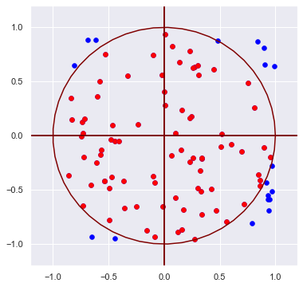
HW6
In the above calculation of $\pi$, draw a figure with circle inscribed in a square with all of your random dots. Use different colors for the dots inside and outside the circle. Plot vertical and horizontal line passing through the origin for the axis.
Hints * You can use plt.axvline and plt.axhline for vertical and horizontal lines. and these can be used to draw the outer lines of the square as well. Just change the location of the lines. * Plotting a circle can be done in many ways, one way is to first generate points on the circle using $(r cos(\theta), r sin(\theta) )$ and taking $r=1$ and $\theta \in [0, 2\pi]$ * Plotting dots can be done by doing a scatter plot at each step. Plot the inside dots inside your if (l<=1) statement. * You can use plt.figure(figsize=(8,8)) to make the aspect ratio same for both the axis. * First use only
Mandelbrot set [Optional]
Here is Wikipedia page on Mandelbrot Set.
The Mandelbrot set is the set of values of c in the complex plane for which the orbit of 0 under iteration of the quadratic map
$$z_{n+1}=z_{n}^{2}+c$$
remains bounded.
A point $c$ belongs to the Mandelbrot set if and only if
$ \vert P_{c}^{n}(0) \vert \leq 2 $ for all $n \ge 0 $
import numpy as np
import pylab as plt
import seaborn as sns
#sns.set(False)
def CheckBoundedness(c, Maxiter):
z = 0j
for i in range(Maxiter):
z = z**(2) + c
if abs(z)>2:
return i
return Maxiter
N=100;
Maxiter = 80;
xmin, xmax = [-2, 1]
ymin, ymax = [-2, 2]
xL = np.linspace(xmin, xmax, N)
yL = np.linspace(ymin, ymax, N)
data = np.zeros( (N, N), dtype=float)
for i in range(N):
for j in range(N):
c = xL[i]+1j*yL[j]
data[i,j] = CheckBoundedness(c, Maxiter)
plt.figure(figsize=(6,6));
plt.imshow(data[::-1].T, cmap='plasma', extent=[xmin, xmax, ymin, ymax]); #'Spectral' is good
#plt.xticks([]);
#plt.yticks([]);
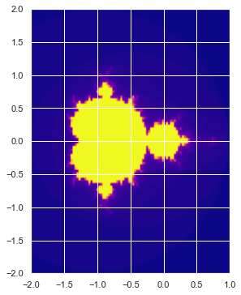
Simple Pendulum
$$ \frac{d^2 \theta}{dt^2} + a \theta + b \frac{d \theta}{dt} = 0 $$
let $y = [ \theta, \omega ] $ where $\omega = \frac{d\theta}{dt}$ Hence
$$ \frac{dy}{dt} = \frac{d}{dt} [\theta, \omega] = \frac{d}{dt} [\theta, \frac{d\theta}{dt}] = [ \frac{d \theta}{dt}, \frac{d^2 \theta}{dt}] = [ \frac{d \theta}{dt} , -a \theta - b \frac{d \theta}{dt} ] = [\omega, -a \theta - b \omega] $$
import numpy as np
import pylab as plt
def pendulum(y,t, a, b):
# y = [\theta, \omega]
# we return [d \theta /dt, -a \theta - b \omega]
dydt= [ y[1], -a*y[0] - b*y[1] ]
#dydt= [ y[1], -a*y[0] ]
return np.array(dydt)
y0 = [5., 0.]
a = 1.
b = 0.1
t = np.linspace(0, 80, 500)
from scipy.integrate import odeint
sol = odeint(pendulum, y0, t, args=(a,b))
plt.figure(1)
#plt.subplot(121)
plt.plot(t, sol[:,0], label='$\\theta(t)$');
plt.plot(t, sol[:,1], label='$\omega(t)$');
plt.legend(frameon=False, fontsize=16);
plt.axhline(y=0, color='k', ls=':');
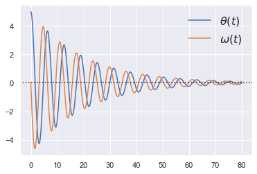